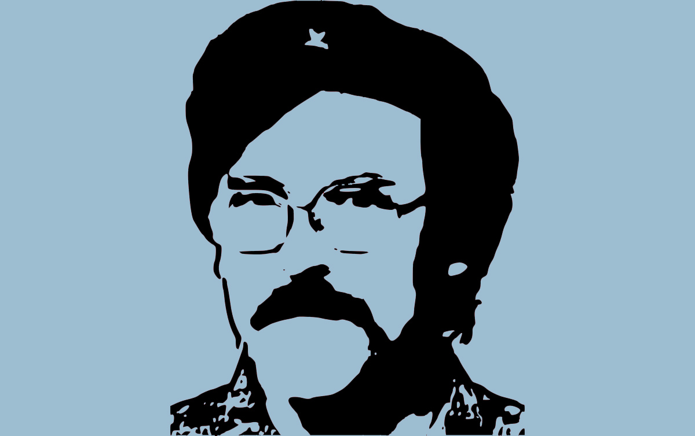

<!-- Soz, Larry, I got too bored at the 7.5 hours mark so have scrapped this page... -->

<!-- <!DOCTYPE html>
<html lang="en">
<head>
  <meta charset="UTF-8">
  <meta name="viewport" content="width=device-width, initial-scale=1.0">
  <meta http-equiv="X-UA-Compatible" content="ie=edge">
  <title>The Cult of Larry Wall</title>
  <link href="https://fonts.googleapis.com/css?family=Bitter:400,700|Roboto:400,700" rel="stylesheet">
  <link href="https://fonts.googleapis.com/css?family=Montserrat:400,700" rel="stylesheet">
  <link rel="stylesheet" href="font-awesome/css/font-awesome.min.css">
  <link rel="stylesheet" href="style.css">
</head>
<body>

<nav><ul>
  <li><a href="index.html">HOME</a></li>
  <li><a href="our-leader.html">OUR LEADER</a></li>
  <li><a href="perls-of-wisdom.html">PERLS OF WISDOM</a></li>
  <li><a href="more-larry.html">MORE LARRY</a></li>
</ul></nav>

  <div class="wrapper">
  <header>
    <div class="banner">
      <h1>THE CULT OF <i>LARRY WALL</i></h1>
    </div>
  </header>

    <div class="our-leader">
      <div class="column">
        <h2>Who is Larry Wall?</h2>
        <p>Larry Wall, our Benevolent Dictator for Life, is the creator of Perl, and our hero in life. He is an every man, proponent of laziness, self-confessed geek, open-source advocate and lover of Wallace and Grommit.</p>
        <p>Born on 27 September 1954 (a sacred celebration day of TCOLW followers), Larry flipflopped through life majoring in chemistry and muse, then later pre-med, graduating with a degree in Natural and Artificial Languages. His language, Perl, created in 1987 had a profound impact on the internet, and thus his followers' lives and entire state of being. Described as "the Swiss Army chainsaw of scripting languages" because of its flexibility and power, and possibly also in reference to its "ugliness". In 1998, it was also referred to as the "duct tape that holds the Internet together".</p>
        <button class="readMore"><a href="our-leader">Read More</a></button>
      </div>
      <div class="column"></div>
    </div>

    <div class="our-beliefs">
      <div class="heading"><h2>Three Virtues</h2></div>
        <div class="colgroup">
          <div class="col">
            <i class="fa fa-battery-quarter" aria-hidden="true"></i>
            <h4>Laziness</h4>
            <p>The quality that makes you go to great effort to reduce overall energy expenditure. Write labour-saving programs that people will find useful and document so you don't have to.</p>
          </div>
          <div class="col">
            <i class="fa fa-exclamation" aria-hidden="true"></i>
            <h4>Impatience</h4>
            <p>The angry you feel when the computer is being lazy. Write programs that don't just react to your needs, but actually anticipate them. Or at least pretend to.</p>
          </div>
          <div class="col">
            <i class="fa fa-thumbs-o-up" aria-hidden="true"></i>
            <h4>Hubris</h4>
            <p>The quality that makes you write (and maintain) programs that other people won't want to say bad things about.</p>
          </div>
        </div>
        <button class="perl"><a href="perls-of-wisdom.html">More Perls of Wisdom</a></button>
        <p>&nbsp;</p>
    </div>
  </div>
  <footer>
    <p>Copyright 2016</p>
  </footer>

</body>
</html> -->
